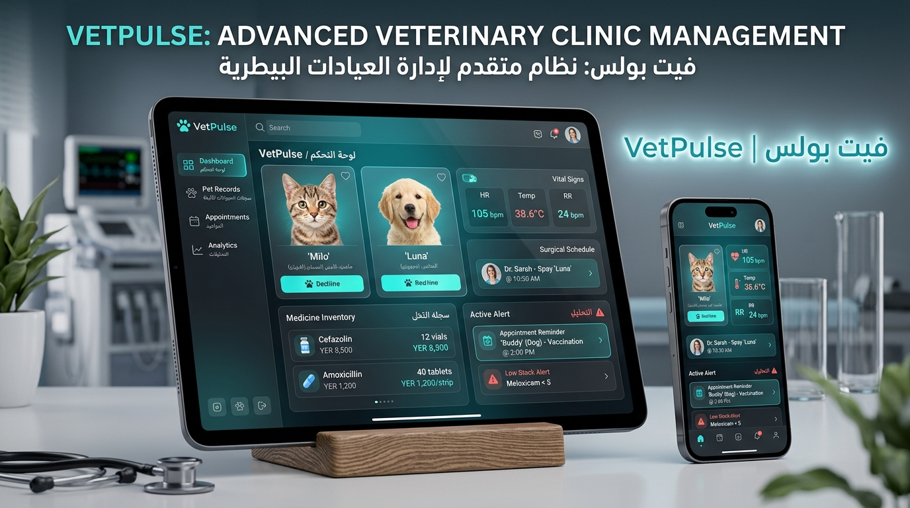
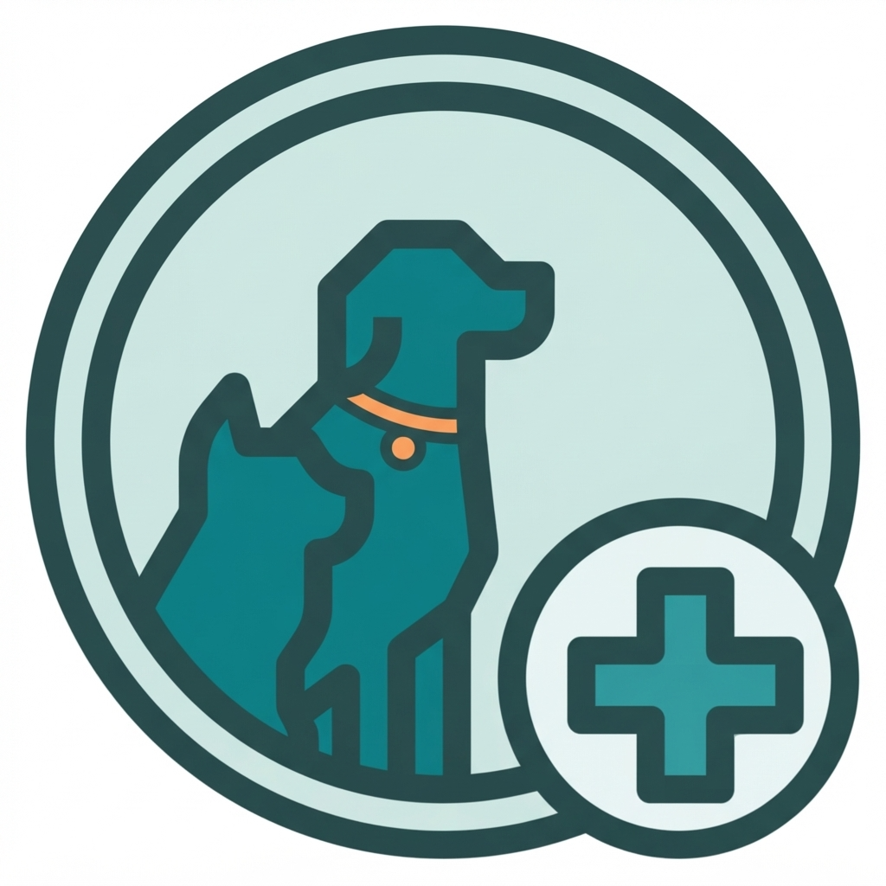
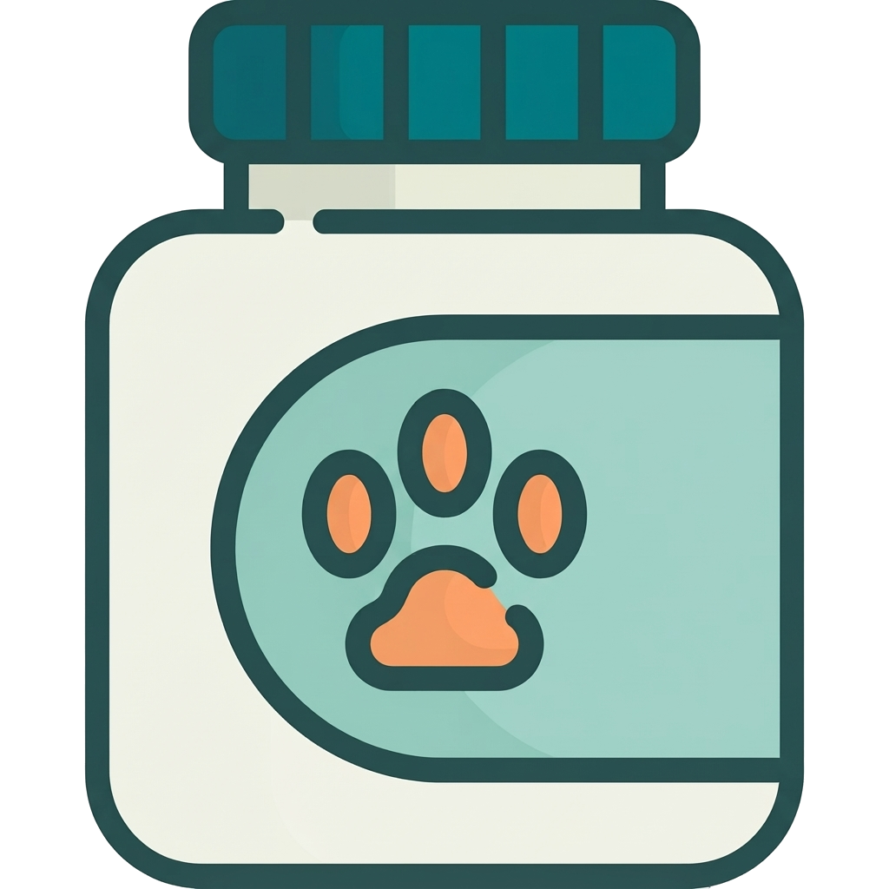
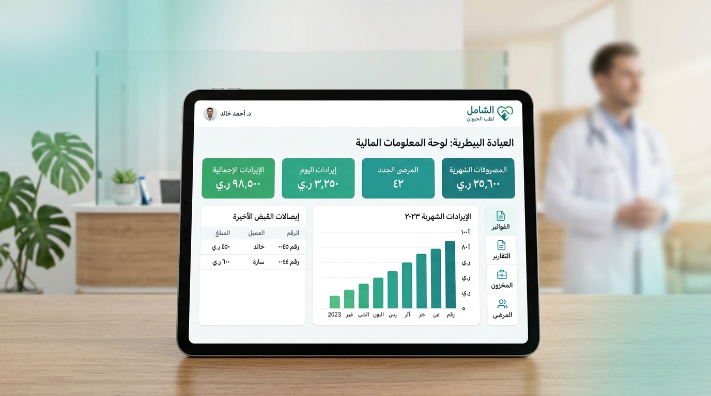

تطبيق احترافي متكامل مصمم خصيصاً لتلبية متطلبات العيادات والمستشفيات البيطرية الميدانية والخاصة. يجمع بين التوثيق السريري الدقيق (SOAP)، إدارة العمليات الجراحية، الصيدلية المزدوجة، والفوترة المحاسبية المتوافقة مع السوق المحلي.


يقوم النظام بجمع معرّفات عتادية غير قابلة للتكرار (المعالج، اللوحة الأم، نظام التشغيل) وتوليد بصمة من 12
خانة وكود طلب موثق بصيغة: VP1-XXXXXXXXXXXX-YYYYMMDD-CHK4.
يرتبط زر التفعيل مباشرة بواتساب المطور الرسمي (+967 771 882 350) لفتح محادثة موثقة تتضمن كود طلب
التفعيل الجاهز للاعتماد الفوري.
يولد المطور كود تفعيل معتمد VPACT-... بتوقيع HMAC-SHA256. تم حماية المفاتيح السرية بمصفوفة بايتات مقنعة بـ XOR
ومقارنة التوقيع في زمن ثابت (constant-time) لمنع ثغرات التوقيت
والهندسة العكسية.
يدعم النظام التراخيص التجريبية، السنوية، والدائمة (Lifetime) مع كشف إرجاع ساعة الجهاز، مع حفظ
واستمرار كافة بيانات العيادة والمرضى والحسابات 100% دون أي حذف أو فقد عند انتهاء الصلاحية أو
التجديد.
+967) لربطه بترويسة المطبوعات
والتواصل.Microchip).77, 78, 73, 71, 70) لمنع الأخطاء في تسجيل الأرقام.°C)، ومعدل نبضات القلب
(bpm).
حاسبة دقيقة مدمجة في شاشة الكشف تعتمد على وزن المريض بالكيلوجرام والجرعة الموصى بها (mg/kg) وتركيز المستحضر الدوائي، لتحديد الحجم المطلوب إعطاؤه بالمليلتر
(ml) بدقة تامة لتفادي أخطاء الجرعات الزائدة.
يولد النظام تقريراً طبياً احترافياً بصيغة PDF مهيأ للطباعة الورقية أو المشاركة الفورية عبر واتساب، يتضمن ترويسة العيادة والباركود، ومقسماً بوضوح إلى 4 أقسام متسلسلة أصولياً من اليمين لليسار:
Session Timeline) يوضح رقم الجلسة من إجمالي
الخطة.في حال تخلف المربي عن الحضور في الموعد المحدد، يوثق النظام الجلسة كـ فائتة / لم يحضر.
تتيح ميزة استئناف المتابعة للطبيب إدخال تاريخ بدء جديد وعدد أيام متتالية إضافية لإكمال العلاج دون حذف الجلسات الفائتة، مما يحفظ الأرشيف الطبي والقانوني للعيادة بشكل مثالي.
تنفرد منظومة VetPulse بتطبيق مفهوم المخزون المزدوج المنفصل تماماً لضبط استهلاك الأدوية البيطرية بدقة ومنع العجز المخزني:
نافذة مخصصة تسمح بتحويل كميات محددة من المستودع إلى الرف بنقرة زر، مع خصم رصيد المستودع وزيادة رصيد الرف في نفس اللحظة مع توثيق اسم الشخص المستلم.
تعتمد المنظومة مكتبة إشعارات النظام الأصلية (flutter_local_notifications) التي تطلق إشعارات فعلية بصوت وتنبيه شاشة
حتى لو كان التطبيق مغلقاً تماماً:

Audit Logs) لمنع أي عبث بالبيانات.يشمل التدشين تثبيت النسخة الإنتاجية المشفرة، ضبط هوية وشعار العيادة، إعداد قائمة الأدوية الافتتاحية، وتدريب الأطباء وموظفي الاستقبال على تشغيل النظام في وقت قياسي.